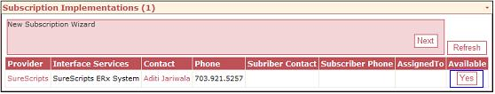

Additional Instruction
| Cause: | The CMA may have an old cancelled subscription for SureScripts for the customer. This will prevent the addition of a new subscription. |
| Solution: |
Delete the old SureScripts subscription and go through the CMA subscription wizard again. The key thing to look for is that the subscription appears in the list and that the "Available" column says "Yes". 
The subscription info travels to the customer database via the daily sync, which is normally part of sp_Maintenance_Frequent. You can either run sp_maintenance_frequent or jmjsys_daily_sync in a query window to download the subscription info. The button should then appear on the User Definition screen.
|
| Details: | |
| Symptoms: |
| ID: 040907115005919 | Last Modified: 03/12/2009 03:00:58 PM |